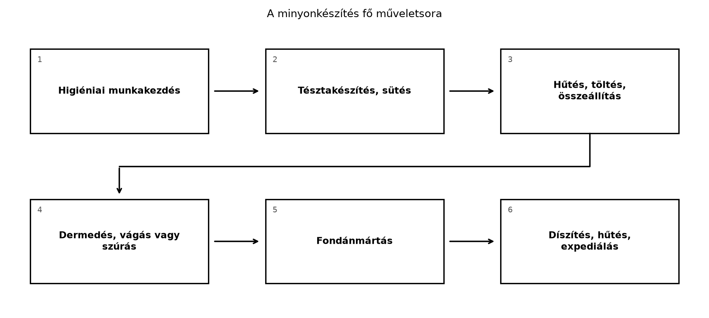

Egy cukrászüzem kirakatában a minyonok az elsők között fogynak: kis méretük miatt a vendég többfélét is választhat, és a szép, fényes fondánbevonat azonnal minőséget sugall. Amikor azonban a minyonokat sorozatban kell készíteni, a töltés, a vágás, a hűtés és a mártás összhangja dönti el, hogy a végén egyenletes, jól záródó, nem folyós és nem repedező készítmények kerülnek a pultba. A minyonkészítés ezért nem csupán „kis sütemény” készítése: a kikészített sütemények kicsinyített munkafolyamata, amelyben a rétegezés, a hűtési lánc, a pontos fondánhőmérséklet és a tömegellenőrzés együtt érvényesül.
Képzeljünk el egy félbevágott minyont. Alul felvert tészta, felette vékony, áttetsző barackíz, majd egy réteg puncsos-barackízes vagy más gyümölcstöltelék (vajkrémmel készült változatban vajkrém), ismét tészta, végül pedig egy vékony, fényes, egyenletes fondánburok. Kívülről a minyon alja sima, az oldalain a fondán lefolyásmentesen zár, a tetején pedig csokoládécsík, gyümölcsdarab vagy olajos mag ül. A formák nem véletlenszerűek: a vágott minyon hasáb, kocka vagy rombusz, a szúrt minyon kör, szív vagy ovális, a tésztahüvelyes minyon félgömb vagy kerek párna.
A metszeten alulról felfelé követhető a rétegrend; a vágott darabot előbb vékony barackízhártya, majd a fondánburok zárja.

A fenti folyamatábra szerint haladunk: először a tészta-, majd a töltelék-, végül a bevonatműveleteket hajtjuk végre. A minyon különlegessége, hogy az utolsó lépésben a mártás gyakran maga a termék arca.
Definíció. A minyon kisméretű, általában 1–2 fogásnyi, kikészített cukrászati termék. Jellemzője, hogy rétegezett vagy töltött belsővel készül, és a felületét leggyakrabban fondánnal, csokoládéval vagy más bevonóanyaggal zárják. A minyon tömegét az üzem receptúrában rögzíti; a hazai gyakorlatban jellemzően 20–35 g körüli darabtömeg használatos, de ez üzemi választás, nem kötelező jogszabályi érték (ellenőrizendő: a termékleírás és a fogyasztói tájékoztatás szerint).
A minyonokat a következő szempontok szerint csoportosíthatjuk:
| Csoportosítási szempont | Lehetséges változatok | Példák |
|---|---|---|
| Alaptészta | felvert, omlós, forrázott, marcipán | piskótaminyon, linzer minyon, indiáner (felvert), képviselőfánk minyon (forrázott) |
| Kialakítás | vágott, szúrt, tésztahüvelyes, két hüvelyes | kockaminyon, szív minyon, indiáner |
| Töltelék | vajkrém, tojáskrém, gyümölcsíz, tejszínhab, ganache | puncskrém, vaníliakrém, barackíz |
| Bevonat | fondán, étcsokoládé, tejcsokoládé, zselé, olvasztott bevonó | puncsminyon, indiáner |
Minyon jellegű készítmény. Ide tartoznak azok a kisméretű cukrászati termékek, amelyek nem feltétlenül kapnak fényes fondánburkot, de méretük, töltési módjuk vagy tálalási formájuk miatt a minyonokhoz hasonlóan viselkednek. Például az apró, krémmel töltött omlós kocka, a képviselőfánk minyon méretű változata, valamint egyes trüffel- és gyümölcszselékockák. A minyon jellegű készítményekre is ugyanazok a higiéniai és allergénszabályok vonatkoznak, mint a minyonokra.
Szabály. A minyonoknál a vágás előtti hűtés, a mártandó felület előkészítése és a fondán hőfoka nem esztétikai részlet, hanem a termék stabilitásának része. A meleg vagy szobahőmérsékletű minyonba a fondán belesüllyed, a töltelék kilágyul, a bevonat pedig elreped. A műveleteket ezért mindig úgy soroljuk, hogy a hűtési idő a technológiai sorrend része legyen.
Jogszabály. A minyonok előállításakor is be kell tartani a 852/2004/EK rendelet szerinti élelmiszer-higiéniai követelményeket, a 1169/2011/EU rendelet szerinti fogyasztói tájékoztatást és allergénjelölést, valamint a Magyar Élelmiszerkönyv cukrászati termékekre vonatkozó előírásait (ellenőrizendő: pontos Élelmiszerkönyv-fejezet). A felhasznált tojástermékeknek pasztőrözöttnek kell lenniük, ha nyers tojásból készült, hőkezelés nélküli tölteléket használunk; sütött tésztában a tojás hőkezelt, ezért a sütött minyonnál a tojáshigiéniai kockázat kisebb, de a tojásallergén-jelölés akkor is kötelező.
A vágott minyonok készítésekor a tésztát és a tölteléket először egy nagyobb tömbbe állítjuk össze, majd egyben hűtjük, és csak azután vágjuk kockára, téglára vagy hasábra. Az eljárás különösen alkalmas arra, hogy nagy adagot egyenletesen, kevés hulladékkal készítsünk el.
Lépések:
A vágástól a papírkapszliig tartó fogásokat a képsor mutatja; az utolsó kép a helyes és a túlmelegített, matt fondánbevonatot hasonlítja össze.
A szúrt minyonoknál a kész felvert lapból formákat – kört, szívet, oválist – szúrunk, majd a formákat töltjük és burkoljuk be. A cél az, hogy a minyonok egyforma méretűek és szabályos alakúak legyenek.
Eljárás:
A szúrt minyon előnye, hogy a szúróforma egységes méretet ad, és a szélek kerekebbek, ezért a fondánbevonat egyenletesebben terül. Hátránya, hogy a szúrásnál több tésztahulladék képződik, mint a vágásnál.
A forrázott tésztából készült minyonok a Forrázott tészta és tésztahüvelyek alfejezetben megismert hüvelyekből indulnak.
Hagyományőrző példa: az indiáner. Az indiáner nem forrázott, hanem felvert (piskóta jellegű) masszából készül: a masszát habzsákból félgömbre nyomják és megsütik, a kihűlt héjakat kivájják, tejszínhabbal töltik, két felét összeillesztik, majd csokoládéfondánnal vagy csokoládéval vonják be. Forrázott tésztahüvelyes minyonra példa a képviselőfánk minyon. Az indiáner a minyonok közé a mérete alapján sorolható; ha kicsi, falatnyi változatban készítjük, akkor minyon jellegű, ha nagyobb, akkor sütemény. Az eredeti arányok üzemenként és szakkönyvenként eltérhetnek, ezért az itt leírt eljárás csak tanulási változat (ellenőrizendő: forrásreceptúra).
A minyonkészítésben a vágási, szúrási és mártási műveletek veszteséggel járnak. A kalkulációhoz a bruttó és nettó tömeg, valamint a veszteség képletét használjuk.
Példa 1. Egy összeállított minyontömb tömege 820 g. A vágási veszteség 8%. Hány gramm kész minyont kapunk, és mennyi lesz egy darab tömege, ha 24 db-ot vágunk?
Megoldás.
A késztermék tömege:
Egy darab tömege:
Ellenőrzés: 24 db × 31,4 g = 753,6 g, ami a kerekítés miatt jó egyezés. A minyonok jellemzően 31–32 g körüliek, tehát megfelelnek a minyon méretre vonatkozó üzemi elvárásnak.
Példa 2. Ugyanehhez a 24 db-hoz 12 g tiszta fondánbevonatot szeretnénk darabonként. A mártás és a lecsepegés miatt a fondán 20%-a veszteségként a tálban marad. Mennyi fondánt mérjünk be a mártáshoz?
Megoldás.
A szükséges tiszta bevonat:
A bemért fondán:
Ellenőrzés: 360 g fondán 20%-os vesztesége 72 g, tehát 288 g kerül a minyonokra. A veszteséget érdemes a termékkalkulációban is figyelembe venni, mert a fondán drága, és a lecsöpögött anyag nem mindig hasznosítható újra higiénikusan.
A gyakorlat célja, hogy a tanuló elkészítsen 32 db vágott puncsminyont fondánmártással, és közben elsajátítsa a minyonok összeállítását, hűtését, vágását, valamint a fondánmártás ellenőrzését.
Munkaruha, hajháló, ékszer nélkül. Kézmosás, majd a munkafelület és az eszközök fertőtlenítése. A tojások héját átvizsgáljuk, a vaj és a gyümölcsíz szavatossági idejét ellenőrizzük.
A habverőgép és a sütő működése tanműhelyi vagy üzemi környezetben, oktatás után és felügyelet mellett végezhető. Otthon háztartási géppel, kis adagban gyakorolj. A sütőajtót csak a sütési idő lejárta után nyitjuk. A forró fondánt és a forró barackízt óvatosan kezeljük: a kézelőt ne érje a gőz, és a lecseppenő fondán ne égesse meg a kezet.
| Nyersanyag | Mennyiség (g) | Megjegyzés |
|---|---|---|
| Tojás (M, 50 g/db) | 250 | 5 db |
| Kristálycukor | 150 | |
| Búzaliszt (BL 55) | 125 | glutén |
| Burgonyakeményítő | 25 | |
| Vaj, olvasztott | 30 | tej |
| Összes felvert tészta (nyers) | 580 | sütési veszteség kb. 15–18% (ellenőrizendő: berendezés szerint) |
| Barackíz | 200 | |
| Cukorszirup (1:1) | 150 | puncsízesítéssel |
| Puncs aroma / rum | 10 | alkohol (ellenőrizendő: iskolai/üzemi szabály) |
| Fondán bevonathoz | 450 | hígítóoldattal |
| Összes bemért segédanyag | 1390 | a késztermék tömege nem azonos a bemért tömeggel |
(ellenőrizendő). A pontos allergénsort a
konkrét nyersanyagok gyártói specifikációja alapján kell rögzíteni.A minyon minőségét elsősorban érzékszervi vizsgálattal és tömegellenőrzéssel ítéljük meg. A formának szabályosnak, a méretnek az előírt tartományban kell lennie. A fondán felülete legyen fényes, egyenletes, repedésmentes; az oldalain ne legyen vastag lefolyás, az alja pedig ne legyen krémmel szennyezett. Metszetben a rétegek élesen elváljanak, a töltelék ne csússzon ki, és ne áztassa el a tésztát. Ízben és illatban a minyon összhangban legyen a megnevezéssel: a puncsminyonon érezhető legyen a könnyű puncsos, gyümölcsös jelleg, de ne legyen keserű, túlságosan rumos vagy égett. A mindennapi gyakorlatban minden gyártási tételből mintát veszünk, és a darabtömeget is lemérjük.
Tünet: a fondán repedezik, pattogzik.
Ok: a fondán túl forró vagy túl sűrű, illetve a minyon
felülete nem volt elég hideg.
Megelőzés/javítás: tartsuk a fondánt 35–40 °C-on,
hígítsuk kis adag hígítóoldattal, és a mártandó terméket hűtsük le. Ha a
repedés már kialakult, a minyon nem menthető, de a hibát a következő
tétel előtt korrigáljuk.
Tünet: a vágási felületen a töltelék elkenődik,
a minyon deformálódik.
Ok: a tömb nem volt kellően hideg.
Megelőzés/javítás: legalább 1 órás hűtés, szükség
esetén sokkolás. Ha a vágás közben már elkenődött, azonnal tegyük vissza
a hűtőbe, és csak később folytassuk.
Tünet: a fondán alatt levegőbuborék vagy
vízgyöngy látszik.
Ok: a felületre került nedvesség (pára) vagy a barackíz
túl forró volt.
Megelőzés/javítás: a mártás előtt a minyon felülete
legyen száraz és vékonyan bevont; a barackíz csak meleg, ne forró
legyen. Ha a buborék kialakult, a minyont éles tűvel szúrjuk meg, majd
gyors újramártással javíthatjuk, de csak akkor, ha a belső hőmérséklet
még hideg.
Egy cukrászüzem 120 db puncsminyont kapott rendelésbe egy családi rendezvényre. A tanuló a reggeli műszakban összeállította a tömböt, de a vágást elhalasztotta, mert a hűtőterhelés miatt nem fértek be. A tömb szobahőmérsékleten várta a vágást, ezért a puncsos-barackízes töltelék kilágyult, és az első vágásnál kinyomódott. A tapasztalat szerint a műveletet a hűtési kapacitáshoz kell igazítani: kisebb tömböket kellett volna kialakítani, és azokat folyamatosan hűtve vágni. A már fellágyult tömböt visszahűtötték, de a vágási felületek egyenetlenek lettek; az ízük változatlan, de a minyonok nem érték el az első osztályú termékszintet. Tanulság: a minyonkészítésben a hűtési idő nem várakozási, hanem technológiai idő.
1. feladat (A)
Csoportosítsd a következő termékeket az alaptészta szerint: puncsminyon,
indiáner, linzer minyon, képviselőfánk minyon.
2. feladat (A)
Egy minyon darabtömege 32 g. Hány darab készíthető 1,28 kg
késztermékből?
3. feladat (B)
Egy minyontömb tömege 1 050 g. A vágási veszteség 6%. Hány gramm minyont
kapunk, ha 30 db-ra vágjuk? Mennyi lesz egy darab tömege?
4. feladat (B)
20 db minyonhoz darabonként 15 g tiszta fondánbevonatot szeretnénk. A
mártásnál 20% fondán veszteséggel számolunk. Mennyi fondánt mérjünk
be?
5. feladat (C)
Egy minyonnál a fondán bevonat repedezik. Sorolj fel legalább három
lehetséges okot, és írd le, hogyan javítanád a következő tételnél!
6. feladat (D)
Készíts el 8 db szúrt minyont a tanult módszer szerint. Töltsd ki a
technológiai lapot, dokumentáld a mártási hőmérsékletet, és értékeld a
késztermék megjelenését és tömegét.
1. feladat (A) megoldása
Puncsminyon: felvert tészta. Indiáner: felvert tészta. Linzer minyon:
omlós tészta. Képviselőfánk minyon: forrázott tészta.
2. feladat (A) megoldása
1,28 kg = 1280 g. 1280 g ÷ 32 g/db = 40 db.
3. feladat (B) megoldása
4. feladat (B) megoldása
A tiszta bevonat: 20 db × 15 g = 300 g.
A bemért fondán: 300 g ÷ 0,80 = 375 g.
5. feladat (C) megoldása
Lehetséges okok: a fondán túl forró (50 °C fölé melegített), a fondán
túl sűrű, a minyon felülete nem hideg, a barackíz túl forró vagy túl
vékony. Javítás: a fondánt 35–40 °C-ra állítsuk, hígítsuk
hígítóoldattal, a minyonokat hűtsük le, és a barackízhártyát vékonyan,
melegen kenjük.
6. feladat (D) megoldása – értékelési
szempontok
A szúrt minyon legyen egyenletes alakú, széle sima. A fondán bevonat
fényes, repedésmentes. A töltelék ne látszódjon ki. A tömeg 20–35 g
közötti, a technológiai lapban rögzített célérték közelében. A mártási
hőmérséklet a megadott 35–40 °C tartományban dokumentált. Ha a minyonok
kívül-belül megfelelnek, a gyakorlat értékelhető.
A minyon kisméretű, töltött, leggyakrabban fondánnal vagy csokoládéval bevont cukrászati készítmény. Készülhet vágott, szúrt, tésztahüvelyes vagy két hüvelyes formában; alapanyaga leggyakrabban felvert, omlós vagy forrázott tészta. A vágás előtt a tömböt hűteni kell, hogy a töltelék ne kenődjön el. A fondánmártásnál a fondánt 35–40 °C-ra melegítjük, 50 °C fölé nem szabad, mert elveszíti fényét. A veszteség számítása a minyonkészítésben a szokásos képlettel történik: , a bemért fondán pedig a tiszta bevonat osztva . A kész minyonokat hűtve kell tárolni, allergénjelölésük a felhasznált nyersanyagok szerint kötelező. Továbbvitt eredmény. A minyonkészítés műveletei – tömb-összeállítás, hűtés, vágás, szúrás, fondánmártás – közvetlenül felhasználhatók a Desszertek: felvert és omlós tésztából, fondánnal, zselével, marcipánnal bevonva alfejezetben.
A fejezet a cukrásztechnológiai alapokra épül: felvert tészta, forrázott tészta, fondánkészítés, hűtési lánc. Jogszabályi hivatkozások: 852/2004/EK rendelet (élelmiszer-higiénia), 1169/2011/EU rendelet (fogyasztói tájékoztatás, allergének), Magyar Élelmiszerkönyv cukrászati termékekre vonatkozó fejezete (ellenőrizendő: pontos fejezetszám). Ellenőrizendő továbbá: a fondánmártás pontos hőfoka és hígítási aránya, a vágott minyon ajánlott darabtömege, a puncsminyon eredeti receptúrája, a felvert lap sütési hőmérséklete és időtartama, a hűtve tárolás pontos paraméterei, valamint az alkoholmentes puncsaroma iskolai vagy üzemi szabálya. A gyakorlati útmutatóban megadott értékek tanulási példák, nem hatósági előírások.